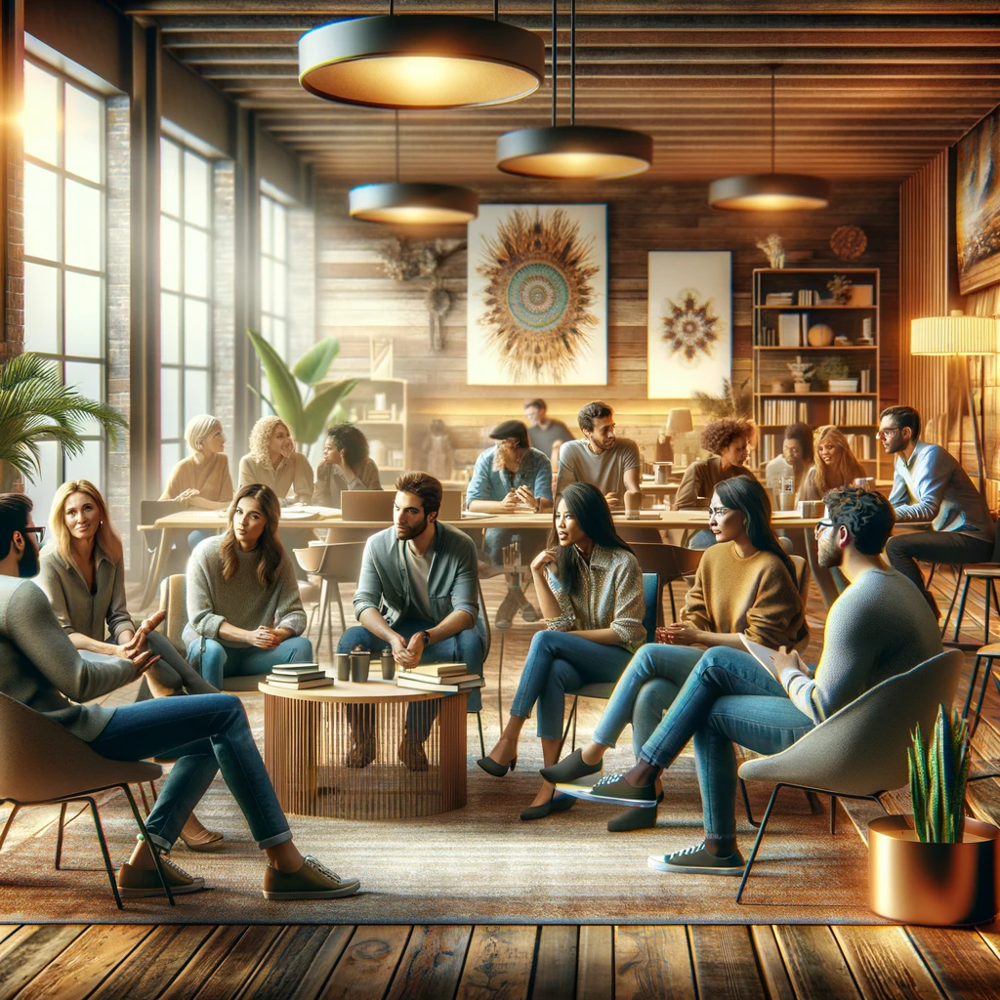

Embark on a journey of discovery and connection at Humanistic Da Vinci’s meetups. These gatherings are not just events; they are vibrant celebrations of human thought and creativity. Here, the wisdom of the past converges with contemporary insights, fostering a community dedicated to exploring the depths of art, philosophy, and the enduring impact of humanistic ideals. Our meetups are a tapestry of discussions, interactive experiences, and cultural exchanges, inviting you to immerse yourself in the rich dialogue that shapes our understanding of the human experience. Whether you’re a seasoned scholar or a curious newcomer, our forums offer a welcoming space for all to learn, share, and be inspired.
Meet ups
Previous meet up

3:00 PM – Welcome and Introductions: A brief introduction to the world of Humanistic Da Vinci and an opportunity for participants to introduce themselves.
3:30 PM – Keynote Presentation: «The Masters of Renaissance»: An engaging talk exploring the works of Leonardo da Vinci, Michelangelo, and Raphael.
4:15 PM – Interactive Workshop: «Recreating Renaissance Techniques»: Participate in a hands-on art workshop, where you’ll learn and apply techniques used by Renaissance artists.
5:00 PM – Group Discussion and Refreshments: Engage in lively discussions over coffee and snacks. Share your thoughts on the Renaissance’s influence on modern art and society.
5:45 PM – Closing Remarks and Networking: A chance to network with fellow attendees, exchange contacts, and discuss potential collaborations or future meetup ideas.
Admission is free, but donations are welcome to support our initiatives.
Art supplies for the workshop will be provided.
Exploring Renaissance Art
Event Description:
Join us for an immersive afternoon delving into the world of Renaissance art. This meetup is a celebration of creativity and intellectual curiosity, a place where the past and present intertwine to enrich our understanding of humanistic ideals.
Agenda:
Who Should Attend:
This meetup is perfect for art enthusiasts, students of art history, philosophers, and anyone with a keen interest in the Renaissance era and its impact on today’s world. Whether you’re a seasoned scholar or a curious newcomer, our forum offers a welcoming space for all.